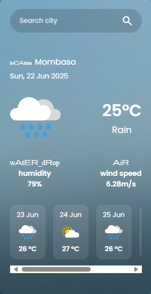
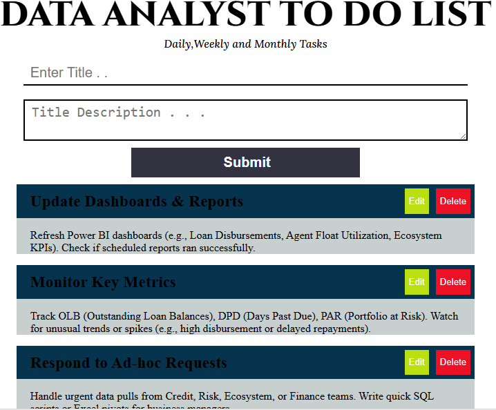
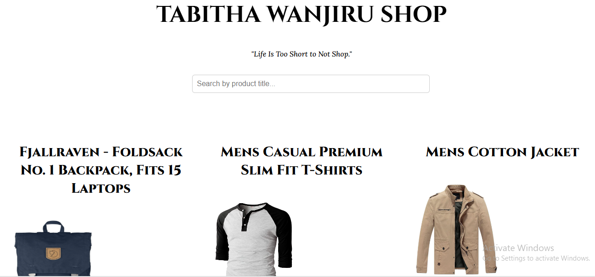

Web Developer | Data Analyst | Tech Enthusiast
Hello! I'm Tabitha Wanjiru Muhiukia, a passionate and self-driven web developer and data analyst based in Kenya. I love building clean, user-friendly web applications that solve real-world problems. With a background in both frontend development and data analysis, I bring a unique perspective to every project I take on.
My journey into tech began with curiosity and has grown into a fulfilling career where I continue to learn and create. I’m particularly interested in the intersection of technology and social impact, and I enjoy using my skills to develop meaningful digital solutions.
In addition to web development, I also have experience with SQL, Power BI, Python, and workflow automation, giving me a strong foundation in both building interfaces and analyzing the data behind them.
These projects demonstrate my ability to create responsive, user-friendly web applications and analyze data effectively. Each project highlights different technologies and methodologies I have employed.
Feel free to explore the projects below to see my work in action.
Click on the project titles to view the live demos.

A responsive weather application using the OpenWeatherMap API. Displays current weather, humidity, temperature, and location-based details with icons.

An interactive to-do list web app built with HTML, CSS, and JavaScript. Allows adding, deleting, and checking off tasks. Focused on DOM manipulation and local storage.

An eCommerce-style website fetching data from the Fake Store API. Features include a product grid, search/filter function, and detailed product pages.
Email: tabitha.muhiukia@gmail.com
LinkedIn: linkedin.com/in/tabitha-muhiukia
GitHub: github.com/TabithaMuhiukia